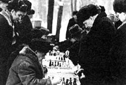

Open Road
In search of the voice of Father and Mother Russia.
ONE JANUARY EVENING LONG AGO in New Hampshire, a Russian emigre schoolteacher described a ritual from his youth. "There comes a night," he told me, "always in winter, when an old man knows it is time, not necessarily to die but to discharge an obligation. He'll pick a boy, usually a grandson, sometimes a godson, but often enough just a village child he happens to like. The two will lock themselves in a quiet room with a bottle of vodka. Then, over the next several hours, assuming the vodka lasts that long, the old man will tell the young one the story of his life. To be sure, it is a kind of ordeal, for the lad typically gets sick or passes out altogether. Nevertheless, the next morning he will consider himself grown up, a man. He will walk down the village streets with a different gait."
That anecdote came to mind as I stood in Moscow's Red Square with my 17-year-old son, Paul. It's not that I thought he would find some old man to share a ritual with here in the forbidden empire, it's that I hoped I would. My boy had already received his driver's license, after all, probably as close as American teen-agers get to a rite of passage, short of marriage or basic training. On the other hand, I was intent on finding traces of traditional Russian culture rather than just doting on contemporary Soviet society. Educated at a time in the U.S. when the great Russian writers were all the rage-Tolstoy, Chekhov, Dostoevski, Turgenev-I dreamed of wearing a fur hat and racing in a troika through a birch forest, the snow keening into my cheeks, a pack of wolves or maybe agents of the Tsar catching up. Romantic stuff. But most of all, I wanted to hear earthy stories of Mother Russia, about the passage of generations or the grip of winter. What better vehicle than some grizzled old-timer willing to tell them?
On our second day in Moscow, the wom an appeared, striding across the hotel lobby like a procession of one: jewelry clinking, French perfume wafting before her. Very solidly built but attractive, she looked about 40. Heads turned, Russian and otherwise. She had noticed us admiring the native lacquered boxes in the gift shop, she explained. Would we be interested in seeing her own collection? Much better quality, much bet ter price. Upstairs, room 654.
We went up and she promptly offered us a vodka, taking one herself. On the bed lay open suitcases full of lacquered boxes, sure enough real beauties and half the price of those in the government-run shop. She described herself, in excellent English, as a freelance retailer, which seemed somewhat euphemistic inasmuch as she then offered to change money for us at the black market rate. Paul, I could tell, was nervous about this. We looked at each other, still mildly jetlagged, still paranoid over the possibility of room buggings and covert luggage searches. Indeed, the evening before he had concocted a Kiplingesque scheme to detect the presence of Soviet surveillance, placing one of his blond hairs across the zipper of his duffel bag as we left our room. The telltale hair lay undisturbed when we returned, a token of integrity, oddly disappointing.
But here, in Olga's digs, it might be otherwise. Were we being set up? His eyes scoured the drapes and the rustic paintings on the walls. He looked down a lampshade, trying to spot a mike.
"You realize, of course, I am married to an American, a professor in San Francisco," she now informed us, pouring herself another vodka. Her reddening cheeks showed it was the real stuff, not anything theatrical. "He is the fourth."
"What became of the others?" I asked.
"Poof, I got rid of them," she replied, sweeping out an arm in dismissal. Paul blanched, convinced we were in deep trouble, if not with the authorities, then with yet darker forces.
"I've lived an extraordinary life," she went on. "Mata Hari. That's me. Mata Hari," she purred.
For some reason, her reference to the famous spy vamp made me buy six lacquered boxes on the spot, four more than I needed. I also asked where I could obtain a decent fur hat, suspecting that a woman with the kind of past she hinted at must have terrific connections in the hat underworld. Ten minutes later, the three of us went careening through the slushy streets of Moscow in a taxi, its windshield washer on constant stream. For February, it was depressingly warm, hardly troika weather.
Naked light bulbs lit the simple wooden stalls of the outdoor market, located in an amusement park shut down for winter. Tarps covered the carousel horses, and the ferriswheel seats had been removed. It was late and only a handful of shoppers milled about, haggling here and there over a pair of shoes or a woolen scarf. We stopped at a stall, its shelves crowded with hats, from rabbit and fox to mink and ermine.
"Pick one you like," whispered Olga. "Then I'll find something wrong with it the lining, the sewing. That will bring the price down. Leave the bargaining to me."
As I tried on a series of hats, a group of shoppers clustered around, as though at a side show left over from summer, each hat drawing an amused ripple of comment. Finally, I saw a prize, a stupendous muskrat. But it just wasn't me. When I put it on I felt like a Siberian shaman, which would never do. Maybe it would suit Paul? He tried it.
Turning to three elderly women in babushkas, I asked them through Olga what they thought of the hat now. Strangely, their mood had become sober, one of the women shaking her head vigorously.
"No," came the answer, "it isn't right. It is too grand a hat for someone so young. He must prove himself first."
There, I had heard it, that echo of old Russia, of what is seemly to one's age, one's status in the hierarchy of experience and growth, a rule formulated ages ago and still faintly encoded in the value, size and elaborateness of a fur headdress. Paul removed the hat and handed it back to the merchant, feeling a little sheepish.
Much later, after a long dinner during which Olga told us of growing up in Leningrad and of her husbands-one a Red Army colonel, another a KGB agent-it struck me that my old man had taken the shape, first, of an old woman at a market and, second, of a savvy, stylish, freelance retailer. Mother Russia indeed. That night it turned troika cold, and Paul and I had to put on our new fur hats to ward it off.-Alfred Meyer
|
 |
|
|